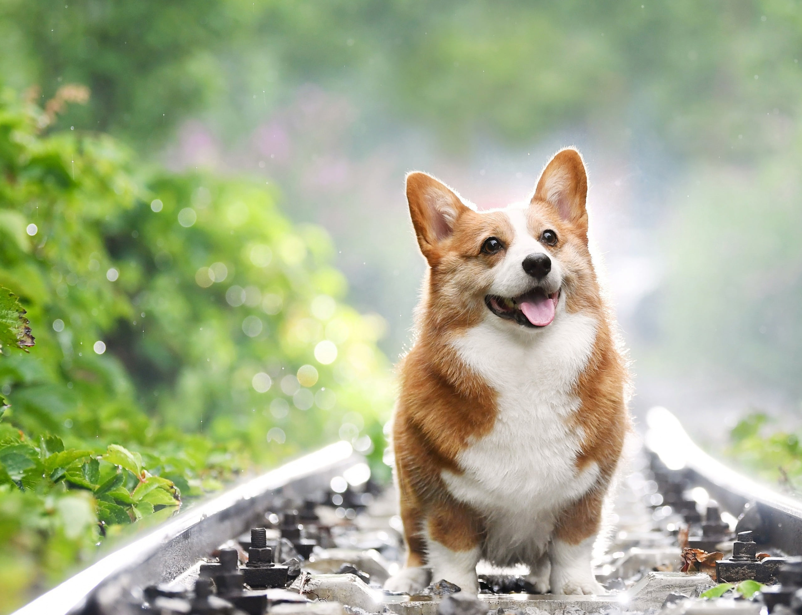
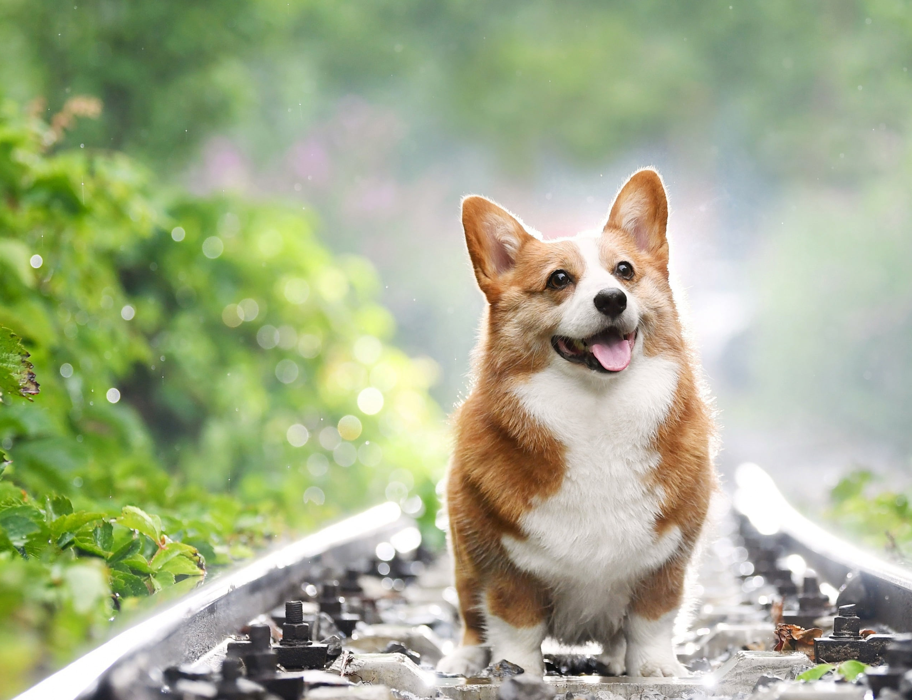

Convierte a tu perro en un 🎸☆🐶PERROCKSTAR🐶☆🎸
 

mira el muro de la fama del mes 🎸☆🐶PERROCKSTAR🐶☆🎸
Jake
El Perro
Él era un perro mágico y compañero constante de Finn que es su mejor amigo y hermano adoptivo. Jake tiene Poderes Elásticos, que le permiten estirar y manipular su cuerpo y hacer trucos.
sigueloCheems
Balltze
El nombre del meme deriva de la palabra ‘cheemsburger’, la cual es una grafía incorrecta de la palabra en inglés ‘cheeseburger’, que quiere decir en español ‘hamburguesa con queso’ ahora esta en el cielo perruno.
siguelo
Maa-Muth
El perro de Mumra el Inmortal
Aunque incapaz de hablar debido a su fisiología canina, parece ser un ser sensible de inteligencia más o menos humana, capaz de seguir planes complejos y posar con éxito como Mumm-Ra y movilizar a los mutantes.
sigueloMilu
El perro de Tin Tin
se caracteriza por tener los pies más firmes en la tierra; no está obsesionado con la misión a cumplir, siendo su principal aspiración la tranquilidad, es un perro sumamente ingenioso y valiente.
siguelo
🐾Derechos de autor © Tienda Lupita🐾